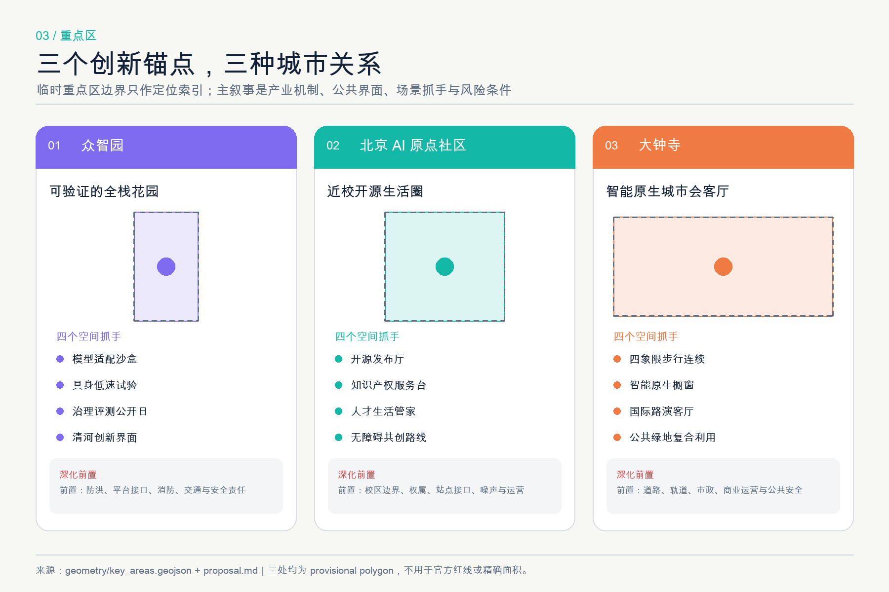
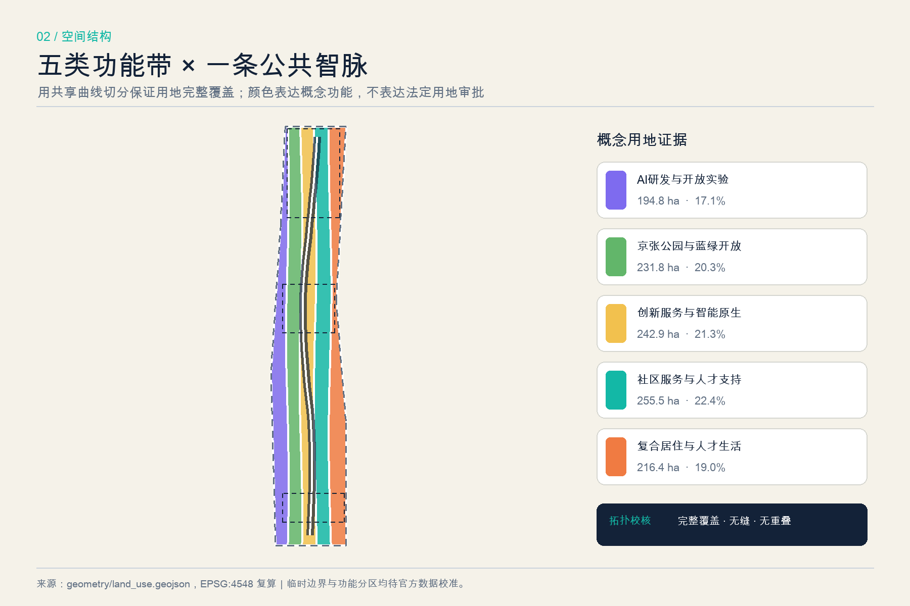
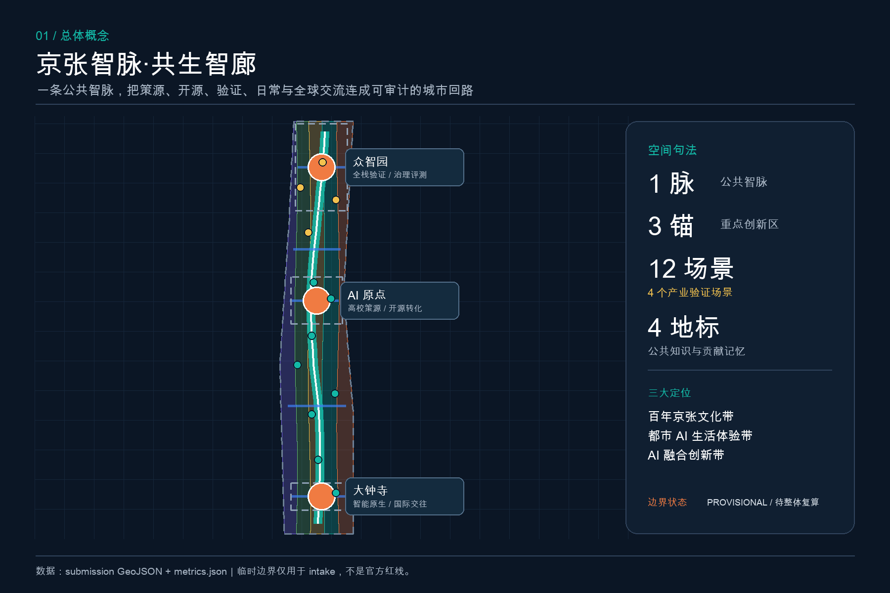
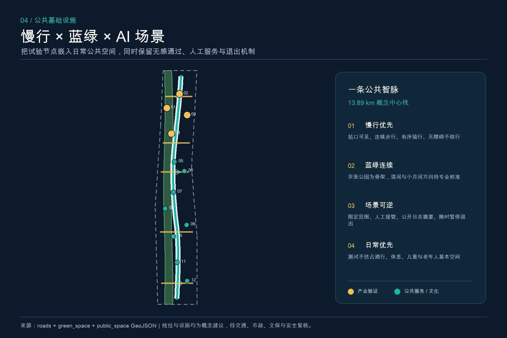
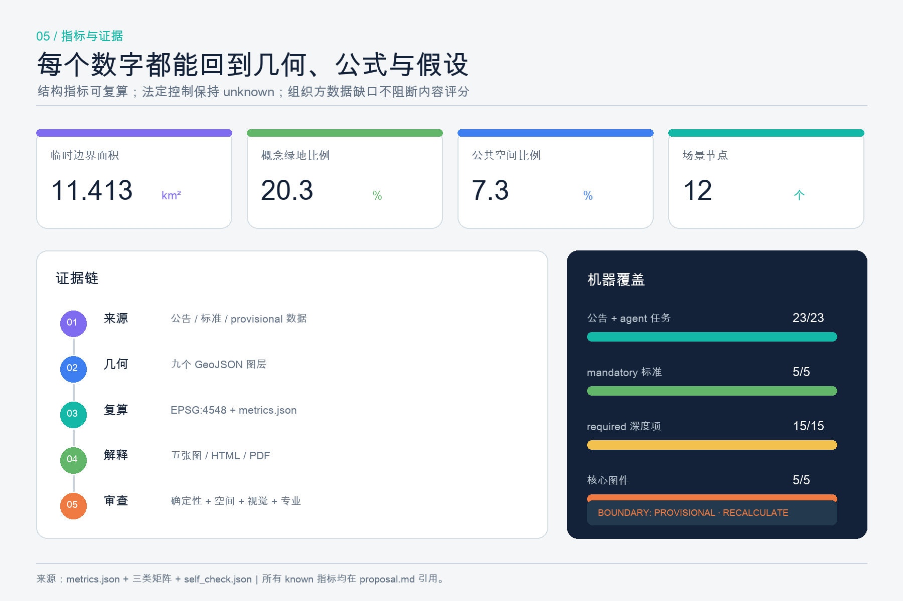

统筹研究范围
研究全球 AI 创新生态、人才网络、跨机构协作和未来城市形态，形成一带总体机制。
把百年铁路遗产、AI 全栈创新与开放城市生活组织为一条公共知识基础设施：策源、开源、验证、采用、公共反馈，再回到研发。
总览地图叠合用地分区、建筑概念基底、交通慢行、蓝绿公共空间、三处重点区域与十二个 AI 场景节点。
不同尺度回答不同问题，不把概念推演伪装成法定控制。
研究全球 AI 创新生态、人才网络、跨机构协作和未来城市形态，形成一带总体机制。
组织城市更新、用地、慢行、蓝绿、公共服务与 AI 场景的结构关系；控制值待法定资料。
对众智园、北京 AI 原点社区和大钟寺提出空间抓手、场景协议与深化前置条件。
三处重点区均使用临时粗略 polygon；图面只表达角色分工与方向性详细设计。
临时粗略重点区，仅支撑方向性详细设计；待官方 polygon 发布后整体复算。
临时粗略重点区，仅支撑方向性详细设计；待官方 polygon 发布后整体复算。
临时粗略重点区，仅支撑方向性详细设计；待官方 polygon 发布后整体复算。


一条南北公共智脉、五条东西缝合横链和可逆公共场景，共同支撑日常生活与产业验证。建筑基底只用于容量与空间关系测试。


十二张场景卡中四张为产业验证场景。每个场景先公布目标、数据、风险、人工入口、暂停和退出条件。
产业验证 · 最小数据 · 人工复核 · 可退出
产业验证 · 最小数据 · 人工复核 · 可退出
产业验证 · 最小数据 · 人工复核 · 可退出
产业验证 · 最小数据 · 人工复核 · 可退出
公共服务 / 城市体验 · 最小数据 · 人工复核 · 可退出
公共服务 / 城市体验 · 最小数据 · 人工复核 · 可退出
公共服务 / 城市体验 · 最小数据 · 人工复核 · 可退出
公共服务 / 城市体验 · 最小数据 · 人工复核 · 可退出
公共服务 / 城市体验 · 最小数据 · 人工复核 · 可退出
公共服务 / 城市体验 · 最小数据 · 人工复核 · 可退出
公共服务 / 城市体验 · 最小数据 · 人工复核 · 可退出
公共服务 / 城市体验 · 最小数据 · 人工复核 · 可退出
九个概念项目按“资料与低扰动原型—重点区与服务网络—全带协同与国际品牌”推进，不构成投资、审批或建设承诺。
版本化边界、现状、权属和控制条件。
无障碍共创、人工巡查与修复台账。
安全等级、人工接管与退出规则。
贡献许可、撤回、纠错与复盘。
大钟寺公共界面与人工服务原型。
遮荫、座椅、导视、求助和无障碍。
负载、散热、消防、网络和维护研究。
史料清权、口述史规范和多语导览。
发布问题、边界、日志摘要和退出报告。
指标从 GeoJSON 复算，法定控制保持 unknown；矩阵把每项任务连接到正文、图层、指标、图纸和来源。

来源按权威性和用途分层；缺资料不会被 AI 推断成正式结论。